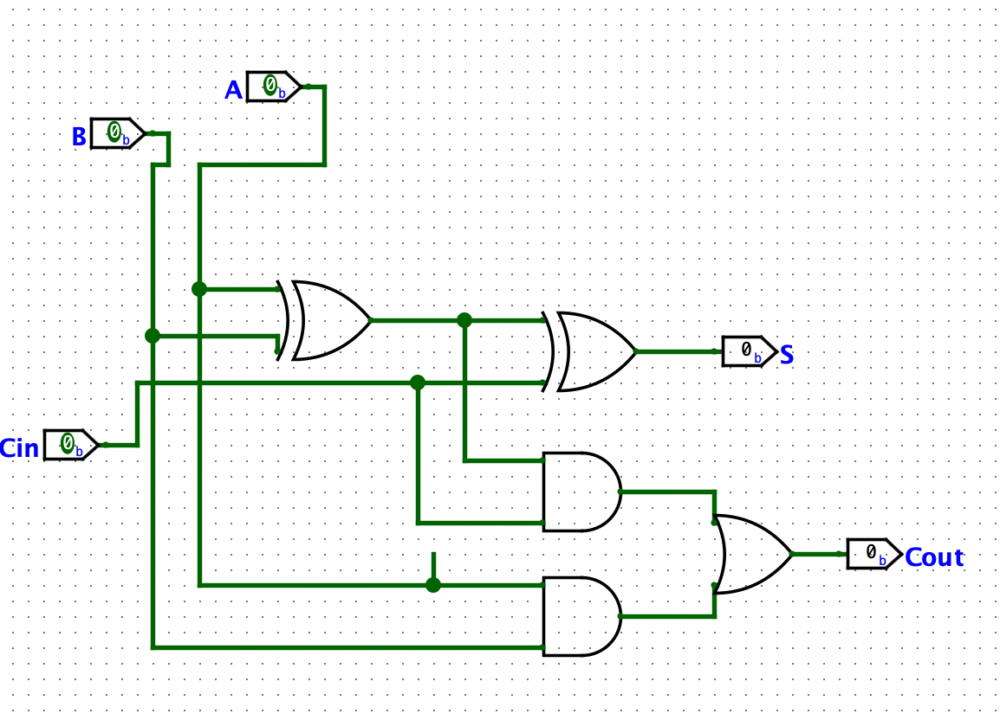

This is one of the most unique projects I have completed so far, and it was for CS3410 (Computer System Organization). The goal of this project was to first develop a RISC-V ALU and then eventually construct a RISC-V Processor. My ALU contained all the basic functionality of the real RISC-V ALU, and the processor mocked the behavior of the real one as well. The construction of the ALU involved creating a 32-Bit Adder, 32-Bit Shifter, and numerous Binop and Unop functions. This project was very time consuming and took nearly two months to complete, but it was very cool once it was finished.

1-Bit Adder

32-Bit Adder

Complete ALU

Processor